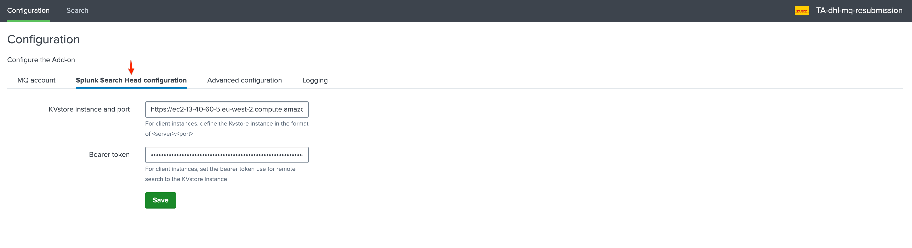
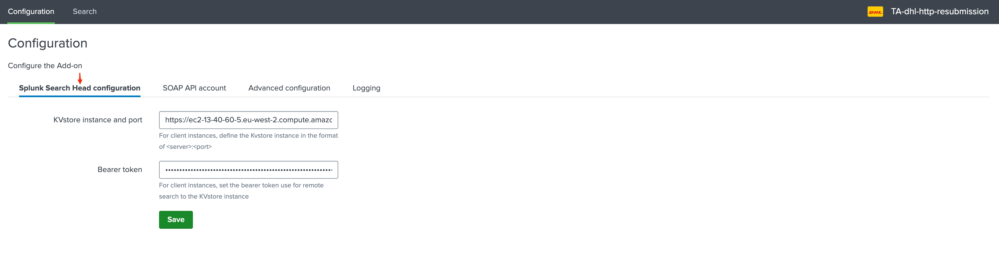
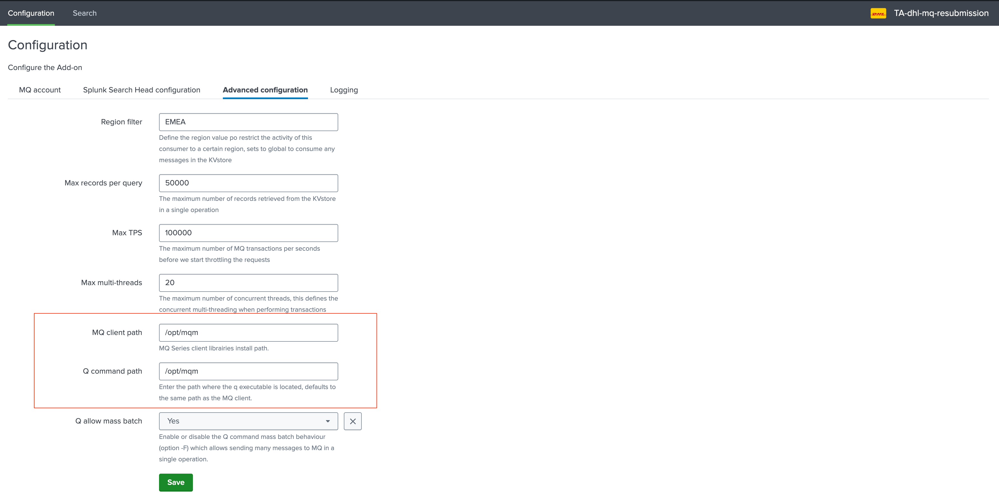

Deployment and base configuration¶
Deployment Matrix¶
The solution is composed by 6 Splunk applications, 3 frontend applications and 2 backend applications.
Application |
Tier target |
Purpose |
|---|---|---|
|
Search Head(s) |
Management application for DHL resubmission |
|
Search Head(s) |
MQ specific frontend application |
|
Search Head(s) |
SOAP HTTP specific frontend application |
|
Heavy Forwarder(s) |
MQ specific frontend application |
|
Heavy Forwarder(s) |
SOAP HTTP specific frontend application |
|
Heavy Forwarder(s) |
This application provides failover capabilities for the solution between multiple Heavy Forwarders |
dhl-resubmission¶
This application is the main frontend application, it provides:
The main dashboards and navigation for administrators and users to interact with the solution, monitor the processes, and perform troubleshooting actions
Supports some frontend related components such as Javascripts files, HTML related objects
Supports some generic REST API endpoints used by the
TA-dhl-resubmission-ha-clientto perform the send keepalive action
dhl-mq-resubmission/dhl-http-resubmission¶
These two applications are the frontend applications for MQ and SOAP HTTP resubmission, these provides:
Roles definition for users and administrators
KVstore definitions, as well as various other Splunk configuration to parse and index logs generated by the frontend tools
Related Splunk custom commands used to interact with the resubmission workflow, such as submitting or validating batches of messages (putmqrelay/puthttprelay, managemqbatch/managehttpbatch, purgemqbacklog/purgehttpbacklog)
KVstore purge scheduled reports
TA-dhl-mq-resubmission/TA-dhl-http-resubmission¶
These two applications are the backend portions of the solutions:
Perform the actual resubmission of messages to the target system, using MQ or SOAR HTTP(s)
Interact with the splunk API on the Search Head Tier to handle the life cycle of the messages
TA-dhl-resubmission-ha-client¶
This application is designed to provide failover capabilities for the solution:
Allows defining a group membership for the Heavy Forwarder
Interacts with the REST API endpoints hosted by the dhl-resubmission application on the Search Head tier to send keepalive information
Bearer Token requirements¶
A bearer token must be created on the SHC which is going to be used by the Heavy Forwarders to perform their various operations on different KVstore collections part of the TA.
The bearer token must match a service account user that is a member of the builtin role:
mqsubmission_superadminhttpsubmission_superadmin
Configuring the connectivity from the Heavy Forwarders to the Search Head tier¶
The connectivity to the Search Head tier needs to be performed in each of the following applications, on the Heavy Forwarder(s):
TA-dhl-mq-resubmission
TA-dhl-http-resubmission
This requires:
The splunk API endpoint, example: https://my_search_head.mydomain.com:8089
The bearer token associated with the account
TA-dhl-mq-resubmission:
{kind=link}
TA-dhl-http-resubmission:
{kind=link}
Test the connectivity:
You can test the connectivity using the builtin custom command:
TA-dhl-mq-resubmission:
| testconnectmq
{kind=link}
TA-dhl-http-resubmission:
| testconnecthttp
{kind=link}
Configuring the MQ dependencies on the Heavy Forwarder(s)¶
In the context of the Add-on, Heavy Forwarders are considered as consumers, and will potentially be consuming pending messages stored in the KVstore of the SHC using different concepts of high availability and scope. (applications and regions)
The first step is to deploy the MQClient librairies, then the q command, the Add-on itself and finally its configuration.
MQClient librairies installation¶
For each Splunk Heavy Forwarder that will handle the submission of messages to MQ Series, the first requirement is the deployment of the IBM MQClient which can be downloaded here:
Once downloaded and uploaded to the server, extract the tarball archive, accept the license and install the packages, example for CentOS / RHEL:
Accept the license first:
/tmp/MQClient/mqlicense.sh
Then install the RPMs:
rpm -Uvh /tmp/MQClient/MQ*.rpm
Q command installation¶
The Q command is a low level MQ utility which is now a paying product. (See: https://www.mqgem.com/q.html)
However, a free to earlier version is available and already in use at DHL for the manual submission to MQ, this binary utility is the one that is going to be used at DHL for the deployment of the application.
Make sure this command is available on the machine, its path is configurable within the UI of the Add-on, by convention it could be placed in the following directory: (which is the default directory used by the application and the default directory of the MQClient)
/opt/mqm
This path can be customised if needed in the configuration UI of the Add-on:
{kind=link}